The Long Point Five is a homegrown ensemble based on the island of Martha's Vineyard, Massachusetts. The group is composed of John Schilling on trumpet, Julie Schilling on clarinet, Jim Athearn on trombone, Bud Larson on flute and Jeri Larson on piano.
LP5 is known for its unique arrangements of eclectic repertory, all written especially for the group by flutist Bud Larson. Works include classical selections by Bach and Debussy, jazz from Dixieland to Mingus, popular standards from Stardust to Gershwin, and Latin and tango numbers.
LP5 performs year-round on and off the island at public and private venues and is available for parties, fundraisers, and other occasions.
John Schilling, trumpet, is a native islander and the Fire Chief of Tisbury, Massachusetts. He also has a distinction of being the longest-serving member of the Vineyard Haven Band, having fortified its brass section for 48 years. Since then he has been involved with numerous island ensembles.
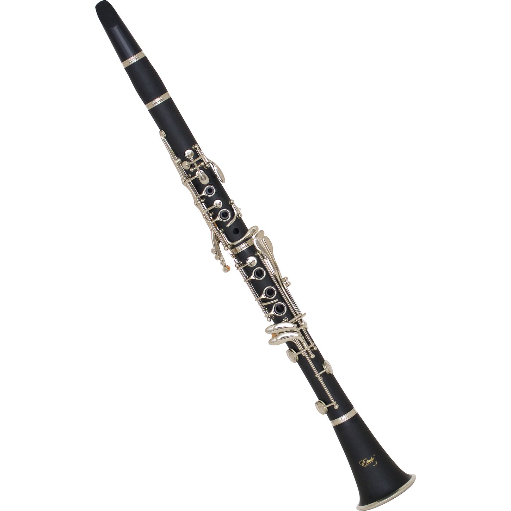
Julie Schilling, clarinet, is an instrumental music teacher for the Tisbury Public Schools, where she teaches winds, brass and percussion for grades 5-8. She is the current conductor of the Vineyard Haven Band, a group of which she has been a woodwind member for 29 years.
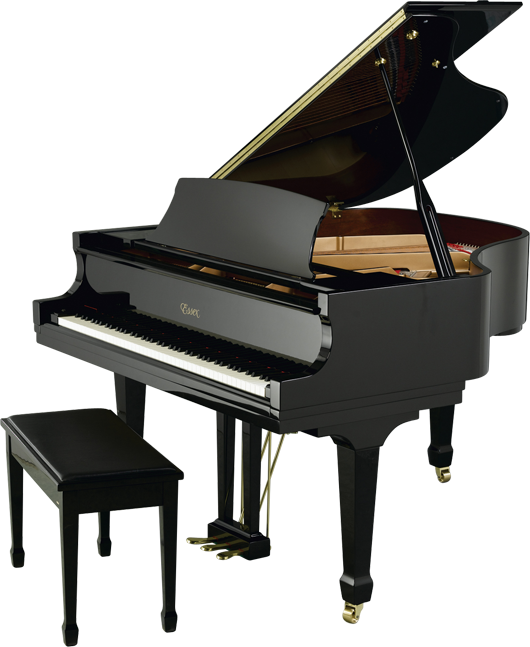
Jeri Larson, piano, is also the bells player in the percussion section of the Vineyard Haven Band. A retired psychotherapist from Connecticut, she is also a noted local painter and photographer who has exhibited around the Island and in Florida.

Jim Athearn, trombone, is a native islander and longtime member of the Vineyard Haven Band and other local ensembles. Jim is co-owner of Morning Glory Farm, a family business and the island's largest private employer.
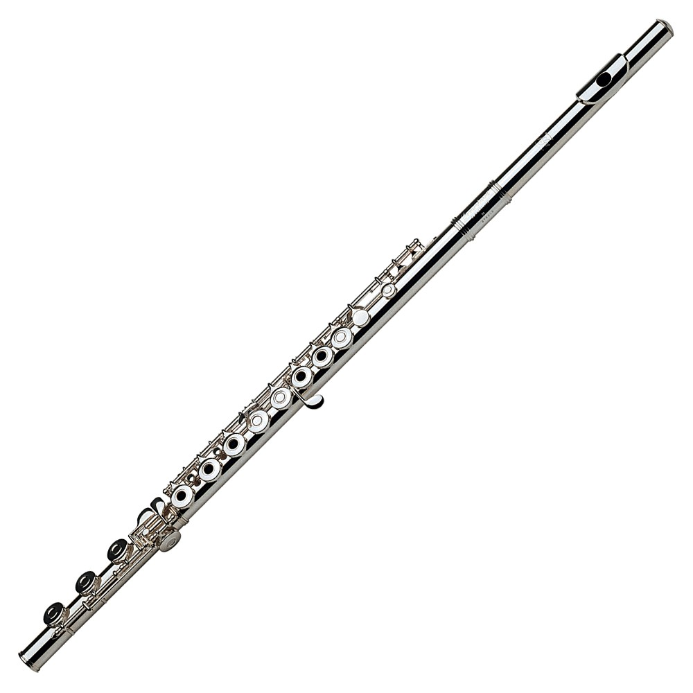
Bud Larson, flute, writes all the arrangements for the Long Point Five. He learned this skill as a composition and piano major at the Yale School of Music, and had a long career as a jazz performer on cornet, trumpet and trombone. He also taught instrumental music in the Danbury (CT) Public Schools for 37 years, and is currently a flute player in the Vineyard Haven Band.
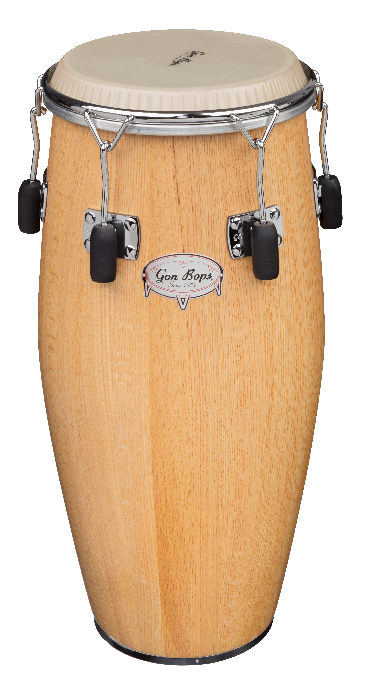
When Bud thinks nobody is looking, he puts down his flute and doubles as the band's drummer.
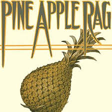
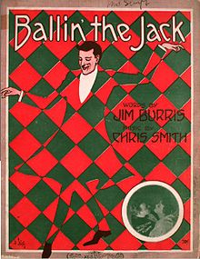
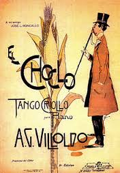
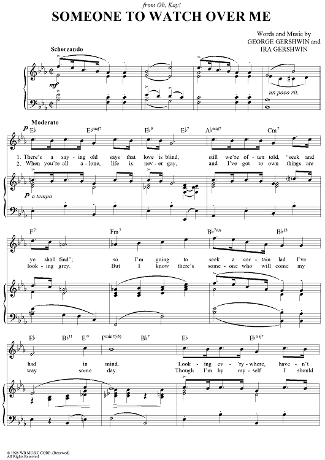
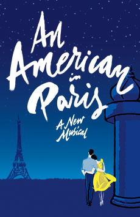
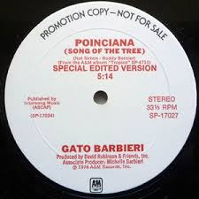
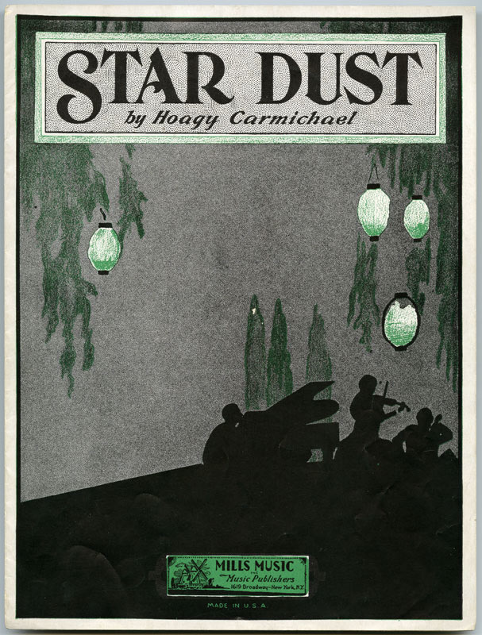
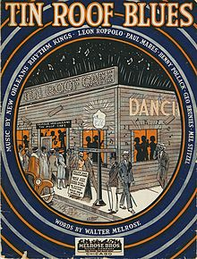